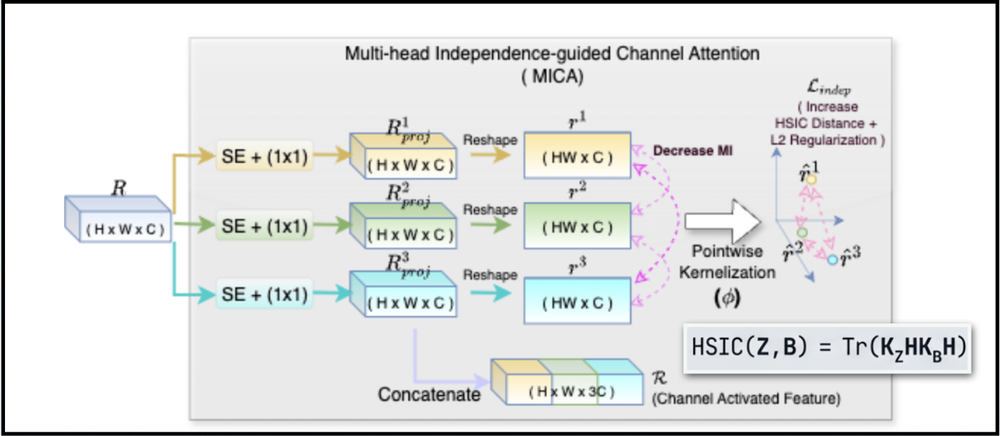
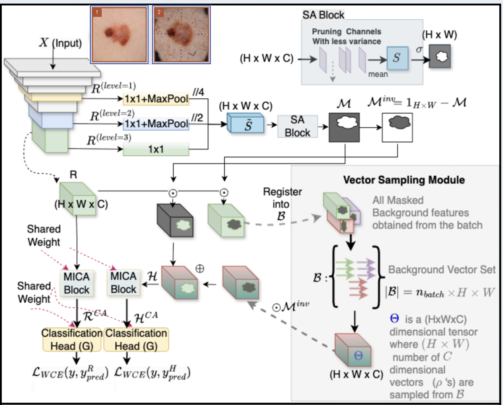
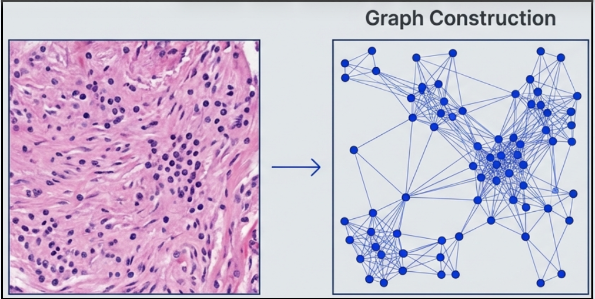
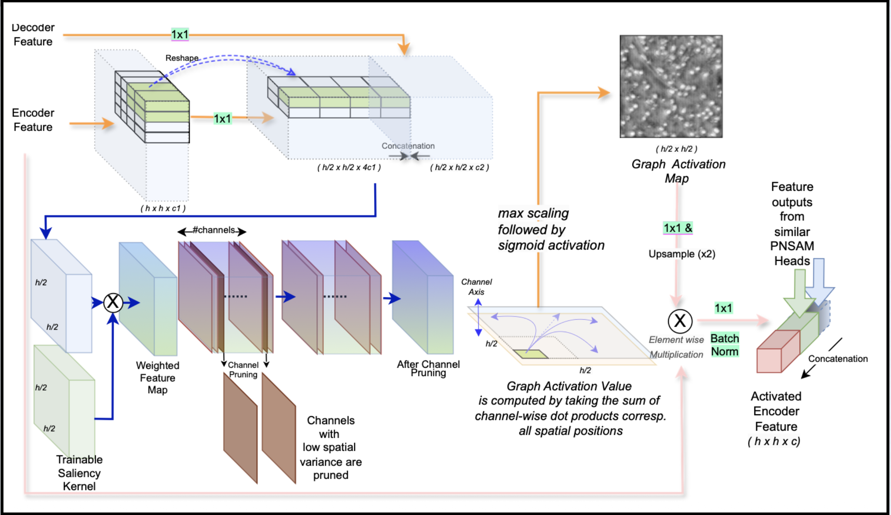
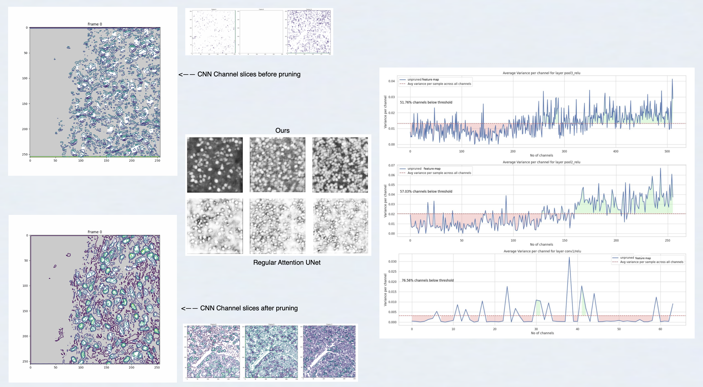
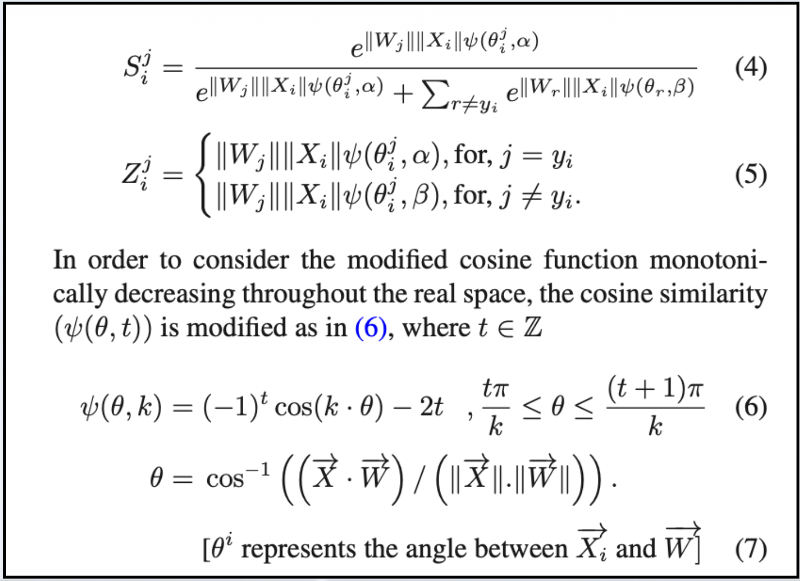
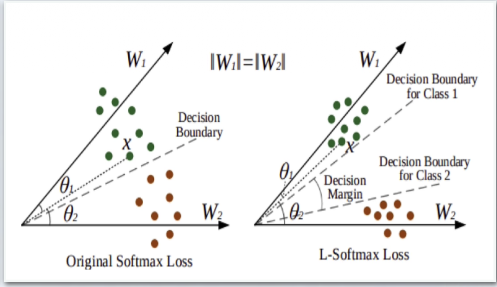
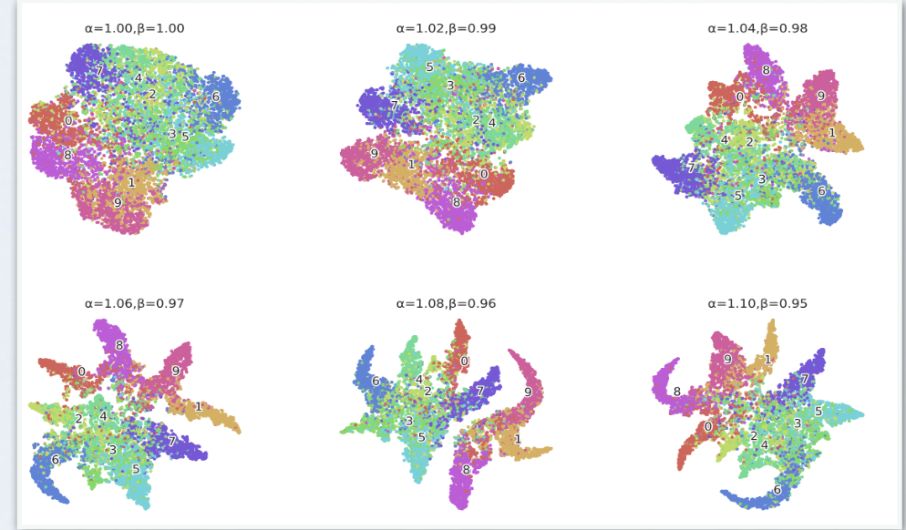

Hi 👋
I am a PhD student in Electrical and Computer Engineering at The University of Texas at Austin, advised by Prof. Michael Orshansky. My research focuses on efficient and robust large-scale machine learning systems: GPU kernel optimization, distributed training, and efficient LLM/VLM pretraining.
Previously, I was a Software Engineer at Deutsche Bank, working on private-cloud and GCP infrastructure, Kubernetes, agentic incident diagnosis, and resource-efficient retrieval and language-model pipelines.
I earned my B.E. in Computer Science and Engineering from Jadavpur University, where I conducted research at the CMATER Lab with Prof. Ram Sarkar on medical imaging, attention, representation learning, and model compression.
Timeline
PhD ECE – UT Austin
Software Engineer – Deutsche Bank
Summer Intern – Deutsche Bank
Jadavpur University (BE, CSE)
Cooch Behar Rambhola High School (WBCHSE)
Cooch Behar Rambhola High School (WBBSE)
Research & Publications
Current: GPU kernel optimization, distributed training, efficient LLM/VLM pretraining, optimizer systems, model compression, quantization, and pruning.
Previous: medical imaging, attention, representation learning, and model compression at CMATER Lab, Jadavpur University.
Publications & Preprints
Background-Invariant Independence-Guided Multi-head Attention Network for Skin Lesion Classification First Author
Proposes BIIGMA-Net to address visual artifacts, illumination bias, and class imbalance in dermatological imaging. Introduces Multi-head Independence-Guided Channel Attention (MICA) using HSIC to minimize redundancy among attention heads, and a saliency-driven background suppression module to enforce lesion-centric feature learning. Validated on ISIC-17/18/19, beating SOTA F1 on ISIC-18/19.
Advisors: Prof. Friedhelm Schwenker, Prof. Ram Sarkar


Multi-headed Graph-Based Attention Aided U-Net for Nuclei Segmentation
Extends U-Net with a Pairwise Node Similarity Attention Module (PNSAM) to capture long-range dependencies via kernel-based pairwise relationships. Incorporates multi-headed attention and channel pruning (50–70% zero-variance channels removed) to improve feature diversity and calibrate spatial attention scores. Tested on Monuseg, TNBC, and CryoNuSeg, outperforming prior methods by 1.0–2.5% IoU.
Advisors: Prof. Dmitry Kaplun, Prof. Ram Sarkar



Margin-Aware Adaptive-Weighted Loss for Imbalanced Classification First Author
Develops MAAW Loss integrating margin-based softmax with adaptive reweighting to stabilize training under extreme class imbalance. Quantifies prediction uncertainty using confidence-driven minibatch statistics to improve generalization. Validated on CIFAR-10/100, FMNIST (imbalance up to 1:100), and clinical datasets HAM10000 and APTOS-2019 BD, showing significant gains in Macro F1.
Advisor: Prof. Ram Sarkar



Education
The University of Texas at Austin, TX, USA
2026 – PresentPh.D. in Electrical and Computer Engineering; efficient and robust ML systems, GPU kernels, distributed training, LLM/VLM pretraining; advisor: Prof. Michael Orshansky.
Jadavpur University, Kolkata
2020 – 2024B.E. in Computer Science & Engineering, 9.23/10.0, First Class Distinction with Honours, departmental rank 4/95; undergraduate researcher at CMATER Lab.
Cooch Behar Rambhola High School, West Bengal
Up to 2020Grade 10: 97.4%, board rank 8; Grade 12: 97.2%, board rank 13; WBJEE 2020: rank 139.
Career
Deutsche India Pvt. Ltd. — Risk, Finance & Treasury
July 2024 – Jul 2026Software Engineer; private cloud and GCP infrastructure, Kubernetes, agentic incident diagnosis, derivatives and reconciliation automation.
Deutsche India Pvt. Ltd. — Technology, Data & Innovation
Summer 2023Summer Intern; dynamic chat interface, expanding knowledge base, resource-efficient retrieval-augmented generation.
Contests & Hackathons
I participate in contests and hackathons to immerse myself in diverse challenges, interact with industry professionals, and collaborate with people from different backgrounds. To date, I have secured top positions in nine of them across both international and national stages, yielding $8,500+ prize money in total.
🥉 2nd Runner Up — Hacknosis 2024: Sustainable MedTech Hackathon
Developed CarbonSage: a comprehensive solution for calculating, tracking, and reducing carbon emissions from devices and data usage using a Multi-Agent System for snippet-by-snippet emission count and code analysis.
🏆 Winner — Nx EVOS 2024: Enterprise Scale Video Application
Built an enterprise-scale video object detection pipeline for retail. Processes CCTV feeds in real-time, computes product dwell times, tracks purchases, and uses the Apriori algorithm for optimal product placement. A Multimodal System involving Signal-to-NLP Transformation.
🥇 Best Project by LlamaIndex — Advanced RAG Hackathon (LabLab.AI)
Developed an industry-grade CRM platform that ingests product reviews, breaks them into trigger phrases using smaller LLMs, and routes through a hierarchical retrieval system to generate actionable tickets.
🏆 Winner — KnackToHack by M&G Global Services
Developed a Safe Guard for LLM chatbots that automates rule creation from regulations like the EU AI Act and GDPR, forming a knowledge graph for hierarchical RAG to ensure compliance.
🥇 First Place — DevRev Forge 2024 by DevRev
Built TicketIn'site.AI: one-stop solution for comprehensive analysis of app reviews and user feedback from diverse sources, facilitating comparative trend analysis of various insight factors using AI.
🥉 2nd Runner Up — App-A-Thon 2.0 by Awiros & Intel
Developed a real-time rider safety application using pose detection, deployed with MLOps on AWIROS, the world's first Computer Vision OS.
🏆 Winner — DataFest @ Integration 2023 by ISI Kolkata
Won a Kaggle contest with two challenges: a signal processing task to identify whale sounds and an estimation task to count tigers from paw prints.
Miscellaneous
Hobbies & Interests
Playing piano and listening to music. Trained in Indian Classical music and Rabindra Sangeet (still keeping it up).
I love reading novels, especially retro Bengali classics 😊, though I have not been able to keep up as consistently in the last few years 😔.
Playing games on PS.